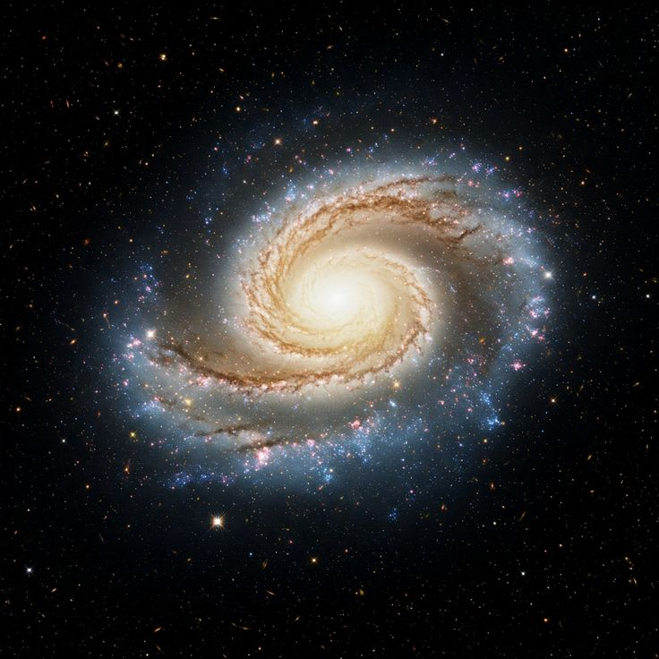
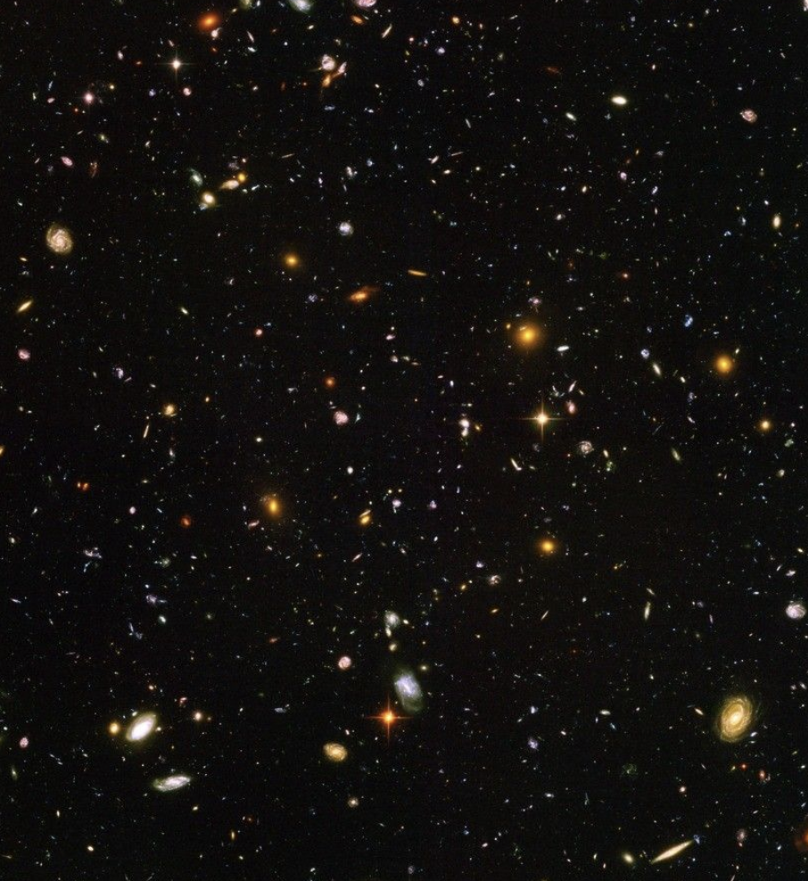
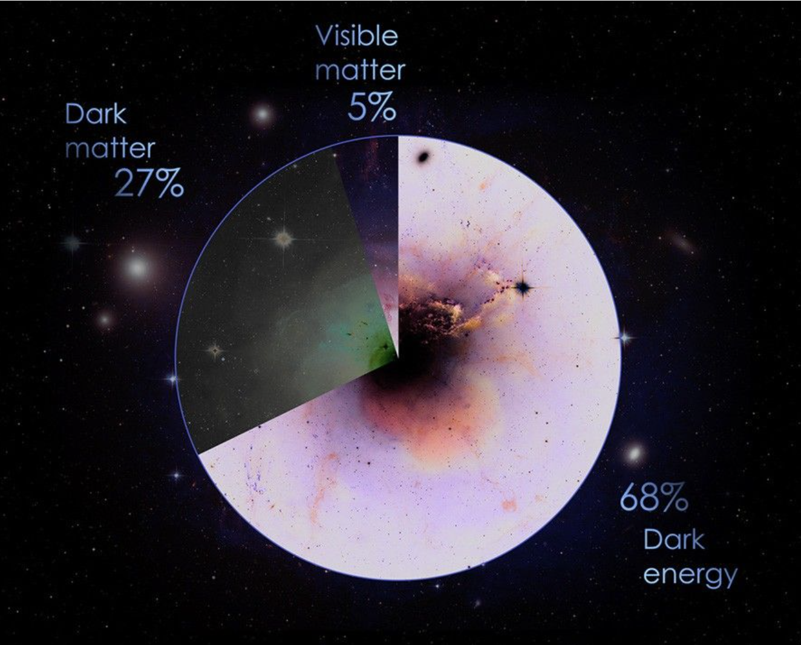

Types of Galaxies
There are three main types of galaxies: spiral galaxies, which have a flat disk with spiral arms; elliptical galaxies, which are more rounded and lack distinct features; and irregular galaxies, which do not fit into either category and often have chaotic shapes.Galaxies are classified by shape (morphology) into four primary types—spiral, elliptical, lenticular, and irregular—often visualized via the Hubble tuning fork diagram. These systems, ranging from pinwheels to featureless blobs, are organized by stellar age, dust content, and star formation rates, with elliptical galaxies being older and spiral galaxies having active stellar nurseries.
Milky Way Galaxy

The Milky Way or Milky Way Galaxy[c] is the galaxy that includes the Solar System, with the name describing the galaxy's appearance from Earth: a hazy band of light seen in the night sky formed from stars in other arms of the galaxy, which are so far away that they cannot be individually distinguished by the naked eye. The Milky Way is a barred spiral galaxy with a D25 isophotal diameter estimated at 26.8 ± 1.1 kiloparsecs (87,400 ± 3,600 light-years),[10] but only about 1,000 light-years thick at the spiral arms (more at the bar). Recent simulations suggest that a dark matter area, also containing some visible stars, may extend up to a diameter of almost 2 million light-years (613 kpc).[28][29] The Milky Way has several satellite galaxies and is part of the Local Group of galaxies, forming part of the Virgo Supercluster which is itself a component of the Laniakea Supercluster.[30][31] It is estimated to contain 100-400 billion stars[32][33] and at least that number of planets.[34][35] The Solar System is located at a radius of about 27,000 light-years (8.3 kpc) from the Galactic Center,[36] on the inner edge of the Orion Arm, one of the spiral-shaped concentrations of gas and dust. The stars in the innermost 10,000 light-years form a bulge and one or more bars that radiate from the bulge. The Galactic Center is an intense radio source known as Sagittarius A*, a supermassive black hole of 4.100 (± 0.034) million solar massesGalaxy Clusters

Galaxy clusters are the most massive gravitationally bound objects in the Universe, with masses of up to a thousand trillion times that of our sun (10^15 Msun) and extending millions of light years. Though called clusters of galaxies (and indeed containing tens of thousands of galaxies), most of their mass is actually dark matter. We learned of that in 1930s, when Zwicky realized that galaxies in clusters move so fast that they must be held together by a much stronger gravity field then their own. Today, we can also observe X-ray emission from the tenious, hot (10-100 million degrees) intergalactic plasma that is trapped in the potential well of the cluster. It confirms the dominance of dark matter in clusters and in the Universe as a whole, since the matter content in clusters is representative of the whole Universe. The intracluster plasma consists mostly of primordial hydrogen and helium, but it also has traces of heavier elements, such as oxygen and iron, produced by stars inside the galaxies. Those elements are driven out from the galaxies into the intracluster medium by supernovae winds and ram pressure exerted as the galaxies move through the intracluster medium. When we observe an energy spectrum of the X-ray emission from clusters, we see emission lines produced by those elements.Dark Matter in Galaxies

Dark matter is the invisible glue that holds the universe together. This mysterious material is all around us, making up most of the matter in the universe. But what exactly is dark matter? That's a question that scientists have been trying to solve for almost 100 years. Dark matter makes up most of the mass in galaxies and galaxy clusters. In fact, scientists estimate that ordinary matter makes up only about 5% of the universe, while dark matter makes up about 27%. (The rest is thought to be dark energy, which is its own mystery). It's thought that dark matter shapes the cosmos, organizing galaxies and cosmic objects on a large scale. From stars and galaxies to the shoes on your feet, ordinary matter makes up everything we can see in the universe — in wavelengths spanning from the infrared to visible light and gamma rays. While dark matter interacts with ordinary matter through gravity, it does not seem to interact at all with the electromagnetic spectrum, including visible light. So dark matter doesn't absorb, reflect, or emit any light. While dark matter is invisible, it does have some things in common with ordinary matter: It takes up space and it holds mass. Because of this, we can see how it interacts with and influences ordinary matter throughout the universe, which is how we're able to "see" and study dark matter.